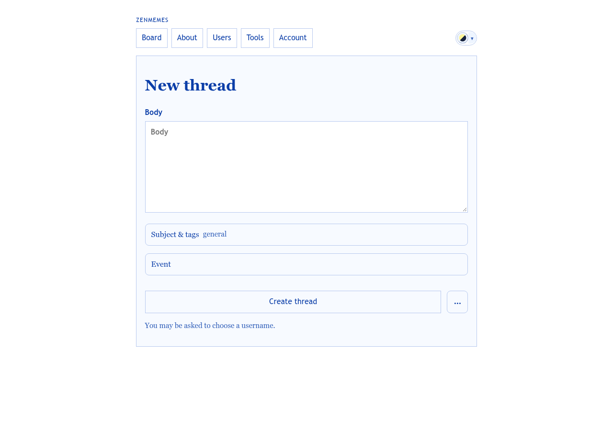
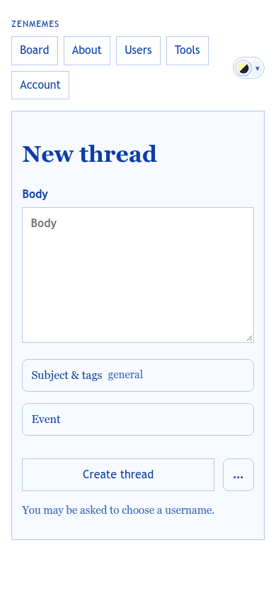

Starting a thread. Write first and decide the details later. A first-time poster should never meet a browser dialog or a wait they didn’t ask for.
templates/pages/compose_thread.php · partials/thread_compose_form.php · partials/image_compose_fields.php · partials/compose_action_menu.php · assets/browser_signing.js (identity states)
window.prompt("Choose your username:"), then waits for “Generating browser keypair…” and “Publishing your public key…”. This was reported in the thread “First of all new account bootstrapping is unacceptably slow”.

Your name is saved in this browser. Back it up from Account to use it elsewhere.